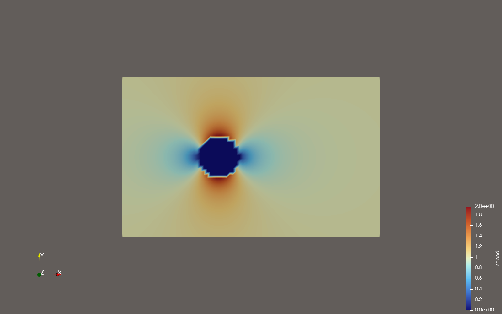
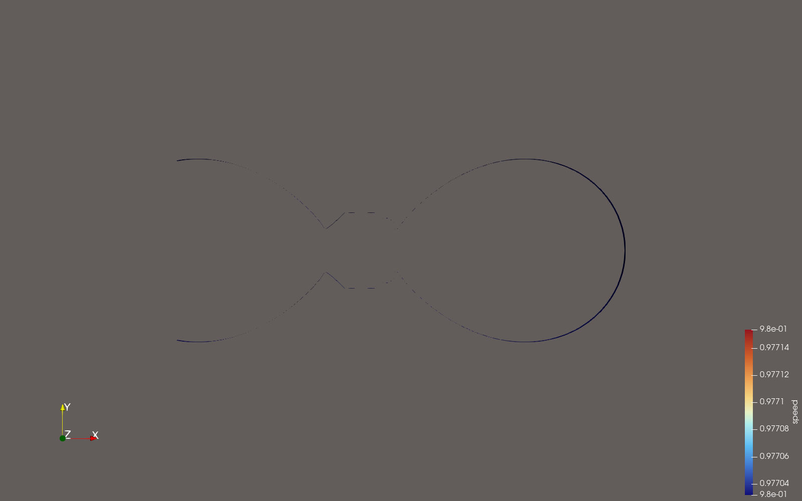
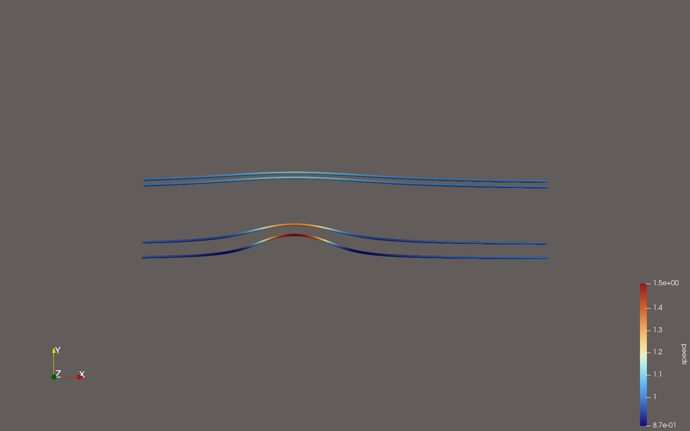
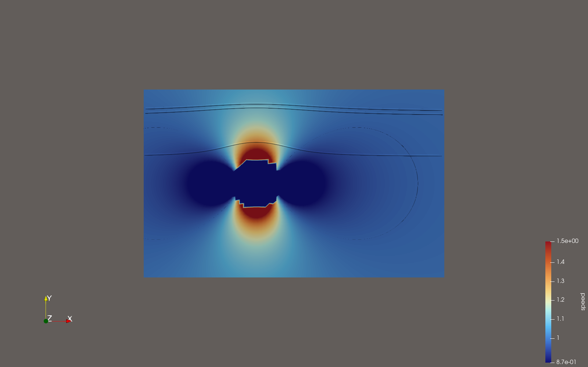

I built this portfolio project to demonstrate a reproducible ParaView workflow for CFD-style scientific visualization. The project uses pvpython to load a VTK dataset, create scalar and vector visualizations, export screenshots, save a .pvsm state file, and generate a camera-orbit MP4 video without opening the ParaView GUI.




pvpython scripts/build_paraview_pipeline.py --input data/fallback_cylinder_flow.vtk pvpython scripts/export_orbit_frames.py --state paraview/flow_pipeline.pvsm --frames 120 ffmpeg -framerate 24 -start_number 0 -i animation/frames/frame_%04d.png -c:v libx264 -pix_fmt yuv420p animation/flow_orbit.mp4
ParaView, pvpython, scientific visualization, CFD post-processing concepts, scalar/vector field visualization, streamlines, contours, slices, tube rendering, state saving, screenshot export, video generation, documentation, and AI workflow evaluation.